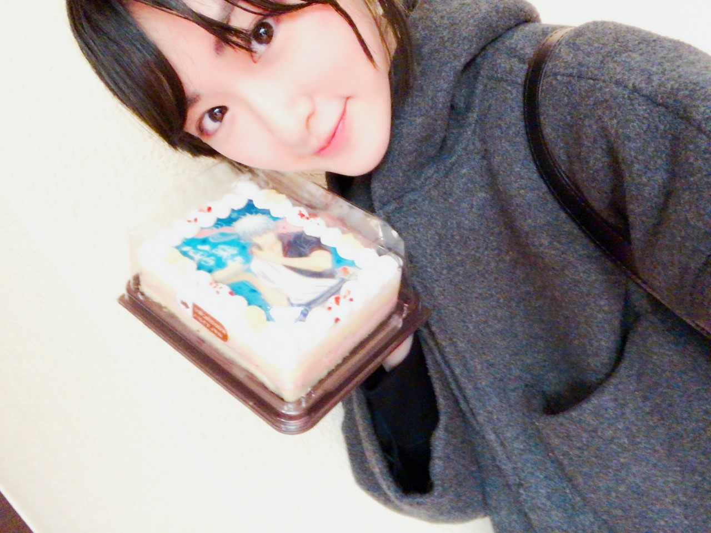
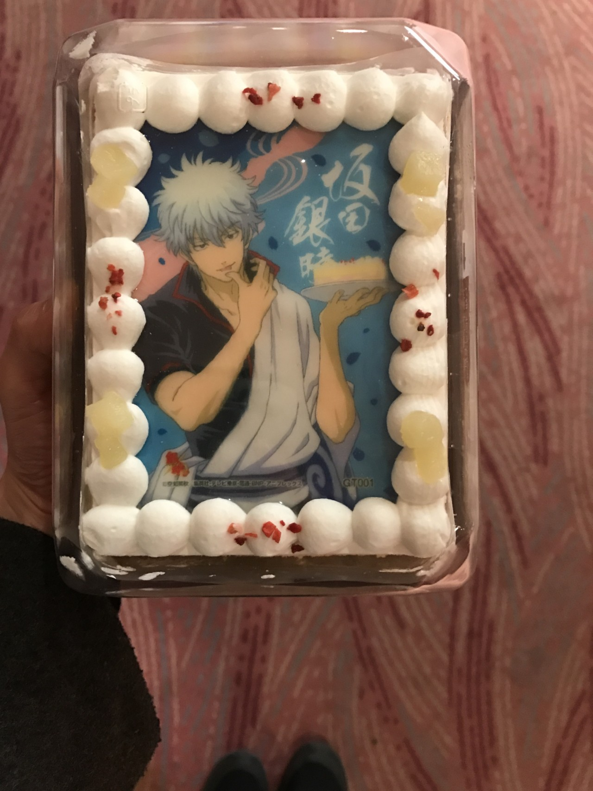
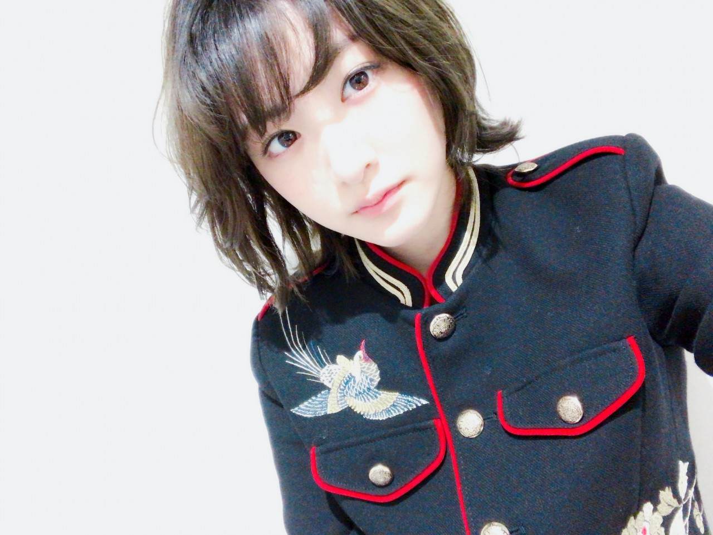

| 2017/03 06 Mon | 生駒里奈 久しぶりに素に戻りすぎて頭痛が酷いです。頭痛薬が効かないです。笑 |
昨日はね〜
昼過ぎまでゆっくり寝て、
夜にとある場所に向かいました。
もしかしたら行けないかも知れないと
諦めてたけど、
神様がオフをくれて行って来ました！
その！
行った場所とは！
銀魂華祭り2017（仮）！！！！！
いろいろないろいろ奇跡が重なり、
祁答院さんがお声をかけてくださり観に行かせて頂けました(´；ω；｀)！！！
はぁ(´；ω；｀)☆☆
最高でした。
ずっと叫びたかった、
お通ちゃんに
お通ちゃんのコールアンドレスポンスにっ！
答えられたー！！！！
ネクロマンサー！！！
お通ちゃんかわいいよお通ちゃん！！
お通ちゃーん！！
真選組がかっこよすぎて泣きました。
ザキのあんぱんをエアーキャッチしました。
最後の銀さんの言葉に心が温まりました。
銀さん、ありがとう！
私お仕事がんばる！！！
空知先生のギャグって本当にすごいんだなって、
一応芸能界でお仕事してて、
トークをする時にすごく考えますが、
あんなのは思いつかないし、
でも、銀魂だからこそ成り立つものなんだなぁとしみじみ(*´꒳`*)

銀さんケーキを頂きました(*´꒳`*)

イケメンすぎて食べれるかしら、、、
どこから食べればいいのかなぁ、、、、
食べるのもったい(´；ω；｀)
でも銀さんをたべれry( ◠‿◠ )
アニメも、週刊誌でも銀魂は今とても熱い！
昨日は銀魂はヤバたんだった。
大銀魂展行きたい。
東京は行けなくて(´；ω；｀)
名古屋は行きたい(´；ω；｀)
大阪、札幌は日程的に(´；ω；｀)
やぱり、作品を見るのもパワー貰えるけど、
イベント行くと生で感じる銀魂の力が凄まじくて！
最高っっっ！！！
何回か、お仕事でジャンフェスなどは行かせて頂きましたが、
ちょー！ちょー！ちょー！プライベートでは初めてのイベントだたから、
お仕事しっかりやらねばという緊張感が取れていたので、
びっくりするくらい全身で楽しめました(*´꒳`*)♡
全ての人に感謝です(´；ω；｀)
ありがとうございます！！
やはり、私のエネルギー源は
ジャンプであるのはずっと変わらない！！
常にワクワクをくれる週刊少年ジャンプ！！
週刊少年ジャンプになりたい！
ジャンプになりたい！
ジャンプになって沢山の、友情、努力、勝利を感じたい！成し遂げたい！！
うへーい( ◠‿◠ )☆

キメた写真ものせとく！
へばなっ☆彡